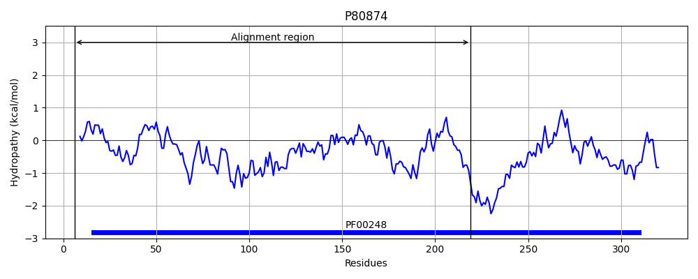

Hit Accession: P80874
Hit TCID: 8.A.5.1.4
Hit Description: gnl|BL_ORD_ID|11580 gnl|TC-DB|P80874|8.A.5.1.4 General stress protein 69 OS=Bacillus subtilis (strain 168) GN=yhdN PE=1 SV=2
Mach Len: 227
e:0.000000
Query TMS Count : 0
Hit TMS Count: 0
TMS-Overlap Score: 0.000000
Predicted Substrates:None
BLAST Alignment:
Score: 203 , Bit scores: 82 bits, E-value: 2.6e-18, Alignment length: 227, Percentage identity: 30
Query: 7 ILNNGYPMPSVGLGVYKIS--------DEDMTKVVNAAIDAGYRAFDTAYFY---DNEASLGRALKDNGVDREDLFITTKLWNDYQGYE--------KTFEYFNKSIENLQTDYLDLFLIHWPCEADGL--FLETYKAMEELYEQGKVKAIGVCNFNVHHLEKLMAQS---SIKPMVNQIEVHPYFNQQELQEFCDRHDIKVTAWMPLMRNRGLLDDPVIVKIAEKY 209
I + G +GLG + I ++ + + AA+D G DTA Y +E +G+A+K+ G R+ + + TK D++ + + E S++ LQTDY+DL+ +HWP D L ET + M+ELY+ GK++AIGV NF++ ++ A + +I+P N E + E D K+T + RGLL K+ E+Y
Sbjct: 6 IADTGIEASRIGLGTWAIGGTMWGGTDEKTSIETIRAALDQGITLIDTAPAYGFGQSEEIVGKAIKEYG-KRDQVILATKTALDWKNNQLFRHANRARIVEEVENSLKRLQTDYIDLYQVHWP---DPLVPIEETAEVMKELYDAGKIRAIGVSNFSIEQMDTFRAVAPLHTIQPPYNLFE-----REMEESVLPYAKDNKITTLLYGSLCRGLLTG----KMTEEY 219 | Protein Hydropathy Plots: |
|---|
|  |
Pairwise Alignment-Hydropathy Plot:
|
|---|
|